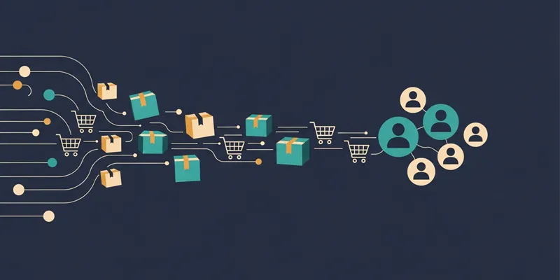

一、越南跨境支付市场正在快速发展
随着越南电子商务、数字服务以及海外企业投资持续增长，越来越多企业开始进入越南市场。但是，不同国家之间的支付体系存在差异，海外企业通常需要解决：
- 本地支付方式接入
- 越南货币结算
- 支付成功率优化
- 交易管理
二、海外企业进入越南面临哪些支付挑战？
1. 缺少本地支付资源
海外企业通常无法直接连接越南银行、 电子钱包以及二维码支付网络。
2. 技术开发成本高
自行开发支付系统需要大量技术投入， 包括接口开发、 订单管理、 风险控制等。
3. 用户支付习惯不同
越南消费者更习惯使用本地银行卡、 银行转账以及二维码支付。
三、为什么需要越南第三方支付通道？
第三方支付服务商可以帮助企业快速连接越南支付生态。 主要优势包括：
- 快速接入本地支付方式
- 统一API接口
- 自动交易通知
- 降低开发成本
- 提升支付体验
四、UKPay越南跨境收款解决方案
UKPay专注于越南本地支付服务， 帮助海外企业快速建立越南收款能力。 通过UKPay支付系统， 企业可以获得：
- 越南本地支付通道
- 银行卡收款能力
- VietQR二维码支付
- API支付接口
- 自动回调通知
- 订单查询管理
UKPay通过技术平台连接企业、 支付渠道以及消费者， 帮助企业降低跨境运营复杂度。
五、适合使用越南跨境支付方案的行业
跨境电商平台
电商企业进入越南市场后， 需要支持消费者使用本地支付方式完成付款。
游戏平台
游戏充值、 虚拟商品销售需要稳定、 快速的支付体验。
数字产品企业
软件订阅、 在线服务、 数字内容平台可以通过本地支付提升转化。
海外服务企业
旅游、 教育、 咨询等行业也需要本地化收款能力。
六、企业如何选择越南支付合作伙伴？
选择越南支付服务商时， 企业应该关注：
- 支付通道稳定性
- 技术接口能力
- 本地支付覆盖范围
- 交易管理功能
- 售后技术支持
一个成熟的支付合作伙伴， 不仅提供支付连接， 还需要帮助企业长期运营。